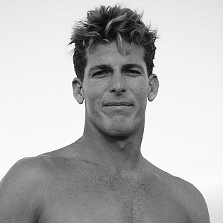

Biography

Photo: "Andy Irons" [Source]
Andrew Doan Irons, born on July 24, 1978, in Lihue, Kauai, Hawaii, was one of the most talented and beloved professional surfers of his generation. He was known for his explosive power, his approach to heavy waves, and his competitive drive. Andy Irons won three consecutive WSL World Championships from 2002 to 2004 while competing directly against the greatest surfer of all time, Kelly Slater. He is my dad's favorite surfer of all time.
Andy Irons passed away on November 2, 2010, at the age of 32. His death sent shockwaves through the global surfing community, and he is remembered as one of the sport's true immortals. [Wikipedia — Andy Irons]
The Greatest Rivalry in Surfing
Irons vs. Slater
The rivalry between Andy Irons and Kelly Slater is widely considered the greatest in the history of professional surfing. During the early 2000s, Slater had already won six world titles and was widely assumed to be unbeatable. Then came Andy Irons.
Irons defeated Slater in critical heats across three straight seasons to claim his titles. Where Slater relied on technical precision, Irons surfed with raw aggression and emotion.
Even Slater acknowledged that Irons pushed him to greater heights. The rivalry brought out the best in both surfers, elevating the sport to new levels of performance and public attention during the early 2000s. [Wikipedia — Irons vs. Slater Rivalry]
Three Consecutive World Titles (2002–2004)
To win three back-to-back world titles requires extraordinary consistency — winning events, advancing deep into heats, and handling the mental pressure of a year-long global campaign. Andy Irons did this three times in a row at a time when Kelly Slater was also competing at his peak. Each of his title runs went down to the final event of the season, often decided in dramatic late-year contests.
His 2003 title in particular was a masterclass in pressure surfing. The final event was at Pipeline and he needed a strong result. He had some of the most stunning tube rides seen that season.
Legacy
Andy Irons' passing in 2010 showed the impact he had in the surf world. Memorial paddle-outs were held at beaches around the world. A documentary about his life, Andy Irons: Kissed by God (2018), was made to honor him.
The Andy Irons Foundation was established in his memory to raise awareness about mental health challenges and bipolar disorder. The foundation supports youth programs and mental health initiatives across Hawaii and beyond. [Website]
In the surfing world, Andy Irons is remembered not just as a champion, but as an icon whose passion and spirit on a wave were unlike anything seen before. His legacy lives on in every surfer who charges heavy waves with heart.
Career Milestones
- 2002 — Won first WSL World Title (defeated Kelly Slater in final standings)
- 2003 — Won second consecutive World Title, including Pipe Masters victory
- 2004 — Won third consecutive World Title, cementing his place in surfing history
- 2006 — Won his third Pipe Masters title
- 2010 — Passed away on November 2, age 32; tributes held worldwide
- 2018 — Documentary Andy Irons: Kissed by God released